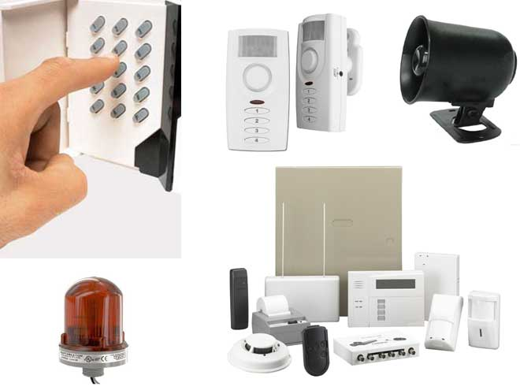
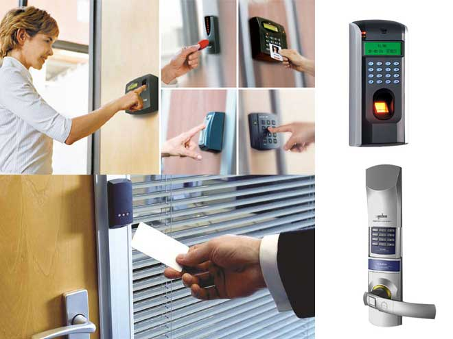

Решения по безопасности для банков и офисных помещений
 Ведение современного бизнеса в быстро меняющемся мире предъявляет к бизнес-помещениям все больше требований. Современное офисное здание сегодня должно сочетать в себе высокий уровень безопасности, экологичности, наличие современных инженерных систем, а так же иметь удобное месторасположение. Компания ″Рубин″ разработала интегрированное решение по безопасности для банковских и офисных помещений, которое позволяет обеспечить качественный контроль систем жизнеобеспечения и функционирования офисного здания, организовать эффективное взаимодействие этих систем и объединить их в единый комплекс безопасности и контроля. Основные задачи интегрированного комплекса безопасности офисного здания:
- повышение уровня безопасности (предотвращение аварий, пожаров, потерь, несанкционированного доступа и пр.);
- обеспечение взаимодействия всех систем офисного здания;
- повышение оперативности управления офисного здания;
- снижение энергопотребления и повышение надежности всех систем офисного здания;
- обеспечение эффективного управления с реализацией функции автоматического контроля, обработки и хранения информации о состоянии систем с единого пункта контроля;
- снижение трудозатрат эксплуатационных и диспетчерских служб;
- графическое представление информации о состоянии систем и оборудования на различных уровнях (объектовом, зональном, адресном).
Комплексное решение по безопасности для офисных зданий от компании «РУБИН»:
Подсистема информационной безопасности
Для решения достаточно деликатного вопроса о информационной безопасности применяются специализированные технические и программные средства защиты. Такие средства служат для предотвращения следующих угроз:
- нарушение правил эксплуатации персональных компьютеров и их сети;
- перехват электромагнитных излучений;
- считывание данных в массивах других пользователей;
- несанкционированное копирование информации на носители;
- несанкционированное использование терминалов зарегистрированных пользователей;
- маскировка под зарегистрированного пользователя с помощью хищения паролей и других реквизитов разграничения доступа;
- маскировка несанкционированных запросов под запросы операционной системы (мистификация);
- использование программных ловушек;
- получение защищаемых данных с помощью серии разрешенных запросов;
- использование недостатков языков программирования и операционных систем;
- преднамеренное включение в библиотеки программ специальных блоков типа "троянских коней";
- незаконное подключение к аппаратуре или линиям связи вычислительной системы;
- злоумышленный вывод из строя механизмов защиты;
- прослушивание линий связи;
- применение звуковых подслушивающих устройств;
- дистанционное фотографирование и видеосъемка.
Система пожарной сигнализации и пожаротушения
Внедрение системы пожарной сигнализации и пожаротушения обеспечивает:
- пожарозащиту всех помещений, в том числе с возможностью начала тушения пожара огнетушащими составами со специальными свойствами до окончания эвакуации людей;
- дымоудаление;
- оповещение и управление эвакуацией;
- возможность локального пожаротушения, в т.ч. автономного, в отдельно взятом помещении;
- создание комплекса автоматической системы пожаротушения с автоматическим, программным, теле-, радиоуправлением.
Система охранной сигнализации
Возможности интегрированного программно аппаратного комплекса позволяют выделить каждое из помещений в отдельную зону или объединить несколько помещений в единую зону. Процедура определения зон и их состав определяется совместно с представителями службы охраны. Вся информация о состоянии помещений (взятие под охрану, снятие с охраны) отображается на удаленном рабочем месте администратора, а поэтажная информация дублируется на удаленном рабочем месте мониторинга. Интеграция охранной системы в комплекс безопасности здания позволяет реализовать двухуровневую постановку/снятие с охраны каждого помещения, основанную на том, что у сотрудников имеется персональные карточки доступа, в которых прописывается право на постановку и снятие помещения с охраны. Таким образом, любой из персонала офиса или определенное руководством лицо при завершении рабочего дня ставит под охрану помещение офиса по средствам считывателя с кодонаборной клавиатурой, устанавливаемого на каждом этаже здания в районе сетевого рабочего места мониторинга.
Система автоматизации парковки
Система автоматизации парковки предназначена для управления потоками автотранспорта при въезде-выезде на парковочные площадки офисных зданий. Автоматизация парковки обеспечивает четкость функционирования, высокий уровень сервиса для клиента, защищенность от злоупотреблений со стороны персонала и мошенничества со стороны пользователей, повышение уровня безопасности и контроля работы стоянок и гаражей на территории офисных зданий.
Введение системы автоматизации парковки позволяет:
- производить автоматическую регистрацию въезда/выезда автомобилей;
- автоматизировать процесс оплаты услуг за пользование автостоянкой;
- исключить злоупотребления и мошенничества при сборе оплаты за пользование автостоянкой;
- иметь оперативную достоверную информацию о количестве автомобилей на автостоянке в текущий момент;
- повысить культуру обслуживания, безопасность и сохранность транспортных средств.
Система интеллектуального видеонаблюдения
Система интеллектуального видеонаблюдения строится на базе цифровых видео регистраторов, обеспечивающих круглосуточный дистанционный видеоконтроль всех событий, происходящих на территории офисных зданий, позволяющий службе охраны визуально контролировать обстановку на объекте, своевременно выявлять неправомерные действия и принимать оперативные меры по их пресечению. Регистрация происходящих событий в реальном времени и одновременная запись в архив, дает возможность производить просмотр и дальнейший анализ произошедших событий.
Для оперативности контроля и реакции на происходящие ситуации организуется двухуровневая система видеонаблюдения, состоящая из главного поста управления, оснащённого сетевым рабочим местом с возможностью администрирования, и дополнительных постов контроля, оснащённых сетевыми рабочими местами мониторинга на каждом из этажей здания.
Система контроля и управления доступом
 Система контроля и управления доступом, смонтированная на базе специального оборудования, интегрированного в программно-аппаратный комплекс безопасности здания, позволяет службе охраны:
- эффективно разграничить доступ сотрудников, вспомогательного персонала и присутствующих гостей по помещениям офисных зданий в зависимости от приоритетности доступа (лестничные площадки, технические помещения (архивы документов) и т.д.);
- значительно уменьшить риск утечки конфиденциальной информации и хищений материальных ценностей;
- извещать о попытках повреждения считывающих устройств;
- получать сообщение о том, что какая-то дверь открыта дольше определенного времени;
- следить за состоянием охранно-пожарной сигнализации и, при срабатывании датчиков, заблокировать или наоборот (например, при пожаре) разблокировать двери.
Система контроля и управления доступом, аналогично системе видеонаблюдения, интегрируется с несколькими взаимодополняющими модулями:
- Модуль бюро пропусков. В базе данных СКД на каждого из сотрудников создается персональная карточка, куда заносятся все личные данные: ФИО, место работы, уровень доступа и т.д. При проходе сотрудника через турникет или любую точку прохода (считыватель) на ГПУ выдаются идентификационные данные на владельца карточки доступа, и сотрудник охраны может визуально сравнить фотографию из базы данных с предъявившим карточку лицом.
- Модуль фотоидентификации. При попытке пройти в зону охраны на посту ГПУ возникает фотография и анкетные данные владельца карточки, и сотрудник охраны принимает самостоятельное решение о пропуске или запрете прохода, предъявившего эту карточку сотрудника в ту или иную зону охраны на основании внутренних распоряжений или установленных прав доступа.
- Модуль учета рабочего времени. Производит анализ и контроль присутствия сотрудников организации на своем рабочем месте в течение рабочего времени, время прихода и ухода, время опоздания, преждевременного ухода и т.д.
- Модуль формирования отчетов. Позволяет системе формировать отчеты в зависимости от заданных параметров (протоколы событий, ложные срабатывания, протоколы за любые периоды времени и т.д.)
- Модуль автоматизации службы кетеринга. Производит обслуживание посетителей буфетов и кофейных автоматов по безналичному расчету.
Обучение работе с автоматическими приводами
Специалисты нашей компании проводят бесплатное обучение персонала Заказчика по работе с приводами. Отвечают на вопросы Заказчика, дают консультации и рекомендации. Мы готовы предоставить любую интересующую Вас информацию по нашим системам и всегда рады сотрудничеству с Вами.
Директор компании «Рубин» Владимир Волошин